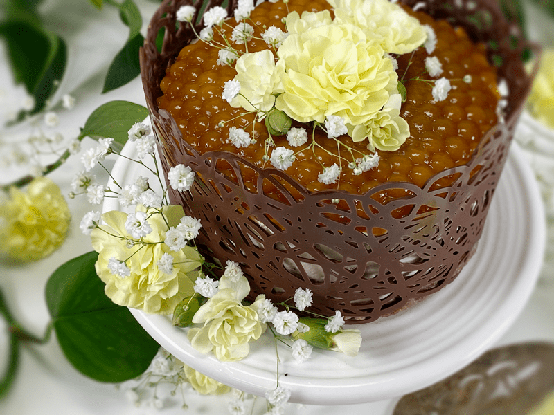
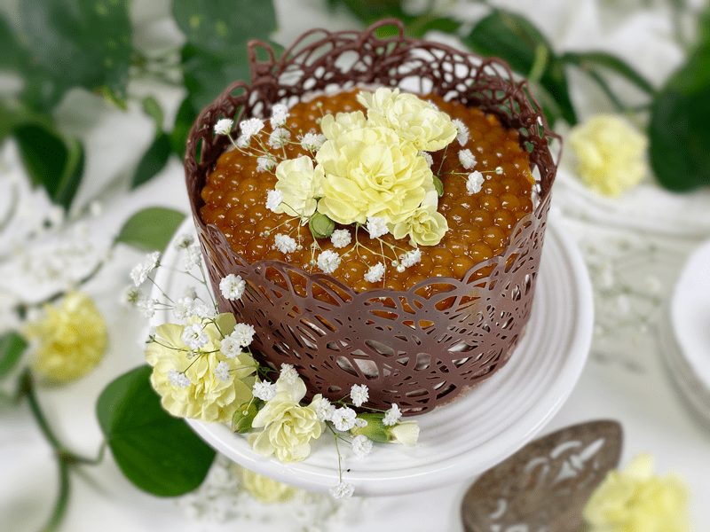
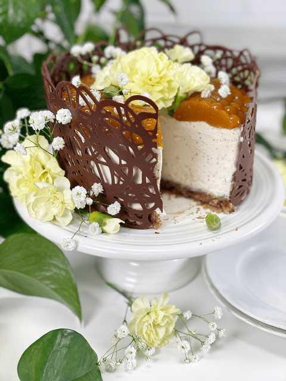
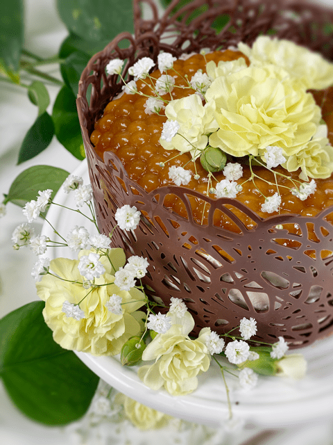
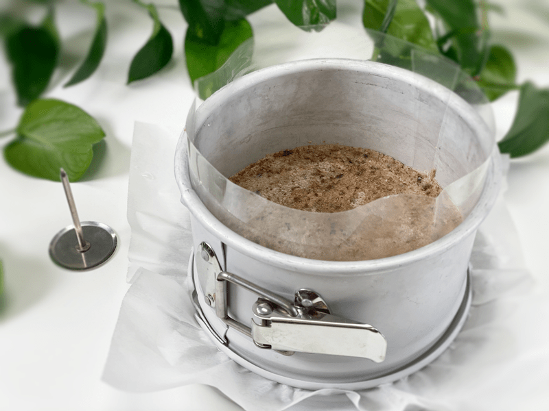
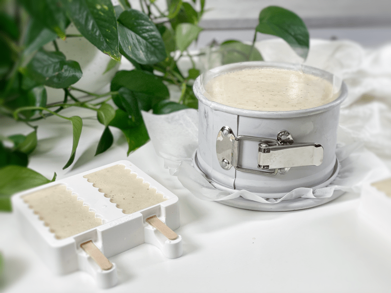
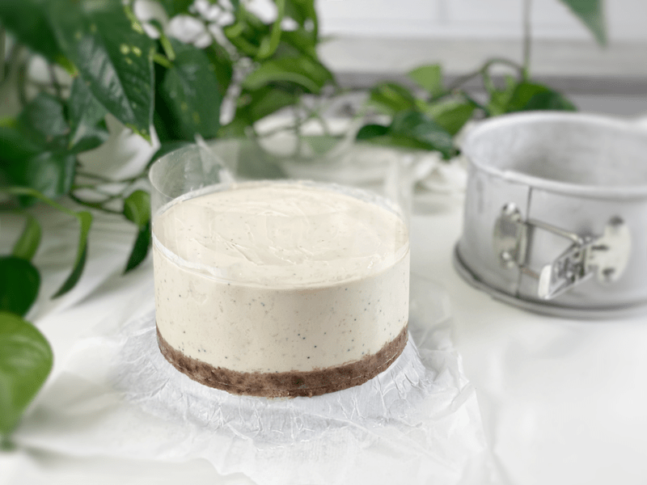
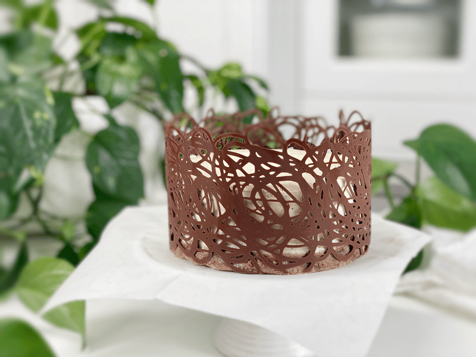

Lemon Poppyseed Coconut Cream Cake | Raw Vegan
Lemon Poppy Seed Coconut Cream cake is a sweet, tart, silky, and airy cream cake that is made with freshly squeezed lemon juice and poppy seeds. Okay, so that seemed pretty obvious based on the recipe title, but the key to any good lemon dessert is to use FRESHLY squeezed juice. Do not use bottled juice from the store…trust me, it’s details like these that can break a recipe and discredit my recipe-writing skills.

Are you a stress eater? I ask because I too turn to food when stressed, except I don’t eat it, I just make it. We all have vices that help us through tough times, and one of mine is tapping into my creativity. I had no idea what the end result was going to be with this dessert; it just sort of unfolded as I accomplished each step.
This recipe will create anywhere between a 6″ to a 9″ cream cake. Regardless of what size pan you use, don’t overfill it if you plan to make the apricot compote. Should you use a smaller pan, you will have some extra batter, which makes wonderful frozen cream popsicles. I used a 6″ Springform pan and was able to make 4 good-sized popsicles, which Bob found very indulgent during these warmer days. I actually do this with every creamy cake I make. I tuck the popsicles into the freezer and pull them out when Bob says, “Boy, I could really go for some ice cream.” I then become his hero, which makes me feel wonderful.

Ingredient Run-Down
Freshly Squeezed Lemon Juice
- Please only use freshly squeezed, which has less time to oxidize and contains no funny preservatives, which means its flavor is brighter and more pronounced compared to the bitter or muted bottled versions.
Young Thai Coconut Milk
- Down below I provided a link on how to make your own coconut milk, but if you don’t have access to coconuts, you can use FULL-FAT canned coconut milk. You will need one (14 oz) can. No need to chill it beforehand; just give it a good shake and pour the whole thing into the blender.
- As the coconut milk chills, it thickens, which helps to give the cake structure. This isn’t the only ingredient that gives this dessert the ability to stand up on its own, but it’s an important one.

Coconut Oil
- There isn’t a replacement for coconut oil. Just like the coconut milk firms up when chilled, coconut oil solidifies, which is the main contributor to the creamy texture and structure.
- I use unrefined cold-pressed coconut oil.
Sunflower Lecithin Powder
- Lecithin helps to emulsify the ingredients, creating a smooth and creamy texture. It also acts as a thickener, so as you can see, we have many ingredients with important roles besides just tasting amazing.
- I personally don’t eat soy products, so I purchase organic sunflower lecithin. You can use either.
Apricot Compote
- This portion of the recipe is completely optional. I created it as a decoration and I had apricots on hand that needed to be consumed.
- If you don’t have apricots, you use another fruit such as peaches, nectarines, strawberries, blueberries, etc.
- You don’t have to use a mold to shape the compote if you don’t want to. You can pour it directly onto the Lemon Poppy Seed layer.
- The use of agar is a must in this recipe, as it gives the compote the jelly-like texture.
- This type of topping doesn’t freeze well, so keep that in mind.
Chocolate Lace Collar
- The chocolate collar is another optional item to make. I wrote a separate post on how to do this, since it will be a great technique to learn for other dessert applications.
- These chocolate collars are easy to make and really make a “wow” statement.
I hope you thoroughly enjoy this recipe. I sliced this cake into nine servings and froze them for Bob. He’s been enjoying a slice almost daily. Please be sure to leave a comment down below. blessings and love, amie sue

Ingredients
yields 6-9″ Springform cake
Crust:
- 1 cup raw pecans, soaked & dehydrated
- 1/2 tsp ground Ceylon cinnamon
- 1/4 tsp Himalayan pink salt
- 3 Tbsp water
- 1/4 cup packed, moist, pitted Medjool dates
Filling
- 1 1/2 cups heavy Young Thai coconut milk or canned
- 1/3 cup cashews, soaked
- 3/4 cup maple syrup
- 1 cup fresh lemon juice
- 1/4 tsp Himalayan pink salt
- 1 cup cold-pressed coconut oil, warmed to liquid
- 3 Tbsp sunflower lecithin powder
- 1 Tbsp poppy seeds
Apricot Compote (optional)
- 1 cup (160 g) apricots, halved & seeds removed
- 1/4 cup water
- 3 Tbsp maple syrup
- 1 tsp agar agar powder
Preparation:
Crust:
- Prepare a 6″ – 9” Springform pan and set aside.
- I used a 6″ pan and used the remaining filling to make some cheesecake popsicles. Two desserts for a one-time effort.
- I lined the base of the pan with parchment paper for ease of removal once the cake is set.
- I also lined the inner rim of the pan with acetate so it didn’t stick to the Springform ring. This is optional.
- Place the pecans, cinnamon, and salt in a food processor outfitted with an “S” blade and process to a crumbly meal.
- Add water and dates and process again.
- The mixture should be loose, yet hold together when pressed firmly into your palm.
- Do not over-process, or the natural oils will separate from the fiber and make the crust oily.
- If you wish to make the crust nut-free, use dry, unsweetened shredded coconut instead of pecans.
- Evenly press the mixture into the base of the pan and set aside.
Filling
- In a high-powered blender combine the coconut milk, cashews, sweetener, lemon juice, and salt. Blend until the filling is creamy smooth. You shouldn’t detect any grit. If you do, keep blending.
- You can use any liquid sweetener. Just be aware of the different flavors and colors that may impact the finished cake.
- If you wish to reduce the sugar content, I recommend replacing the liquid sweetener with 3/4 cups (179 g) of Markus Sweet or non-GMO Erythritol. Be sure to grind it to a fine powder after measuring it out, using a spice grinder, a coffee grinder, Magic Bullet, or Vitamix dry container.
- After powdering the sweetener, let it rest a little before removing the lid. If you open it right away, stand back and don’t inhale deeply.
- If you can’t find Young Thai coconut milk, you can use canned full-fat coconut milk (1 BPA-free can).
- With a vortex going in the blender, drizzle in the coconut oil and then add the lecithin. Blend just long enough to incorporate everything together.
- What is a vortex? Look into the container from the top and slowly increase the speed from low to high. The batter will form a small vortex (or hole) in the center. High-powered machines have containers that are designed to create a controlled vortex, systematically folding ingredients back to the blades for smoother blends and faster processing, instead of just spinning ingredients around, hoping they find their way to the blades.
- Add the poppy seeds and pulse a couple of times.
- Pour the batter into the pan.
- I used acetate paper around the inside of the Springform ring to aid removal of the cake once it was frozen. This is totally optional but a nice tool have in your pastry supply drawer.
- Gently tap the pan on the counter to remove any air bubbles.
- Place in the freezer until firm, then transfer to the fridge a couple of hours before serving.
Apricot Compote (optional)
Option 1
- Combine the apricot, water, and maple syrup in the blender, processing until it creates a creamy puree.
- Pour the puree mixture into a small saucepan and bring the mixture to a boil. Whisk constantly until dissolved. Lower the heat and let simmer for 1 min.
- Pour the mixture into the mold and refrigerate until solid–about 4 hours. If you wish to skip using a mold, you can pour this directly onto the firm cream cake, sliding it back into the fridge for the compote to set up. It doesn’t freeze/thaw well, so don’t add it until ready to transfer the cake from freezer to fridge.
Option 2 – more raw version
- Combine the apricot and maple syrup in the blender, processing until it creates a creamy puree. Set aside
- Combine the water and agar powder in a small saucepan and bring mixture to a boil. Whisk constantly until dissolved. Lower the heat and let simmer for 1 min.
- Pour the mixture into the blender while it is running, so it quickly combines with the apricot puree.
- Pour the mixture into the mold and refrigerate until solid–about 4 hours. If you wish to skip using a mold, you can pour this directly onto the firm cream cake, sliding it back into the fridge for the compote to set up. It doesn’t freeze/thaw well, so don’t add it until ready to transfer the cake from freezer to fridge.
Ready to Get Started?
-

-
Little helpers: Line the base of the pan with parchment paper and if you have it, line the inside edge with acetate paper.
-

-
Since I used a 6″ Springform pan, I had excess filling so I made a total of 4 creamy popsicles!
-

-
Once frozen, remove the Springform ring and peel off the acetate paper (if used).
-

-
And there you have it! Now you can finish decorating your cake.
Click (here)!
A funny story about this here chocolate lace collar. When the time came to cut the cake, I broke into a sweat. Even after all these years of creating raw cakes, I still get nervous about making the first cut. This particular cake took my fears to a whole new level due to the chocolate cake collar.
I danced around the cake, trying to muster up the courage (like seriously — this is my ritual). I felt a bead of sweat on my brow. It was time, Amie Sue, cut the darn thing already! I ran the sharp knife under really hot water to heat the blade. I knew this would help the knife glide through the chocolate and cake with more ease. I worked slowly and methodically. I called Bob into the studio to dab my brow through the complete process.
I did it! I didn’t demolish all my hard work, and I plated up the beautiful slice of cake for Bob. A friend of ours is living on our property for the time being, so I called her to see if she wanted to come up for a slice of cake. Within seconds I heard her tires screeching as she peeled up the driveway — a dust cloud followed her.
Thanks to COVID and social distancing… she sat on the front porch waiting for her slice of cake. I set it out for her and sat six feet away from her. She said it looked delicious and without any hesitation, she smashed the chocolate lace right into the cake, smooshing it all together. I busted out laughing (in my head) and just smiled as she engulfed her piece of cake without a word. Lesson learned — don’t sweat over the small stuff like trying to perfect a piece of cake when serving it. Serve it with the same amount of love that went into making it, and it will be well received no matter what it looks like.
© AmieSue.com